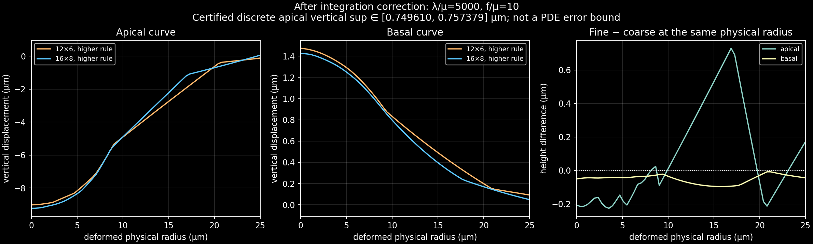

Joint quadrature and mesh refinement of the activated tissue model
Completed: the verified higher-rule 16×8 equilibrium still differs from the higher-rule 12×6 equilibrium by an exact discrete Eulerian apical-height supremum enclosed in [0.749610, 0.757379] µm. The maximum material-column shortening changes by only +0.157448 µm. Therefore integration correction does not remove the substantial inter-mesh shape sensitivity.
This study uses one preselected strong-load case: the actual small-region geometry, , , and a 16×8 P2 mesh. It tests whether the substantial 12×6-to-16×8 shape sensitivity remains after correcting numerical integration. There is no biological response-data input, gain fit or material change.
The source runner is scripts/run_joint_refinement.py; full states, protocols and receipts are retained separately under runs/joint_refinement and evidence/joint_refinement_*.json. This job does not launch a 24×12 computation.
1. What is held fixed and what changes
The previous default-rule mesh comparison at this load gave an exact discrete Eulerian apical-height discrepancy in approximately [0.747863, 0.755509] µm. That comparison held the six-point degree-four volume rule and surface Gauss8 fixed. Separately, the quadrature study demonstrated that default-rule equilibria fail the higher-rule force check, despite a modest correction to some scalar observables.
Here the coarse comparator is the already verified 12×6 Duffy8/surface12 equilibrium. The 16×8 default-rule equilibrium is used solely as an initial guess for a new fixed-load Duffy8/surface12 relaxation. Its old verification is not reused as higher-rule verification. The new field must pass Duffy12/surface16 force evaluation, exact local orientation and global embedding checks before comparison.
Both final comparators therefore use the same actual integration policy, constitutive law, load, boundary, activation support and material parameters. Their represented equilibrium equations differ through the displacement mesh. The coarse solve uses dense Newton polishing and the fine solve verified sparse Newton polishing; these preserve the same potential and gradient, but identical numerical trajectories or a unique corresponding nonlinear equilibrium branch are not proved. This tests empirical inter-mesh sensitivity after integration correction, with that branch qualification. It is not a mathematical continuum-error enclosure.
2. Sparse Newton preserves the physical model
The physical potential in the higher-rule implementation is a sum of element and boundary-edge contributions. A volume triangle depends on the displacement components of its six P2 nodes; a boundary surface contribution depends on its three edge nodes. Fixed degrees of freedom are eliminated. The auxiliary pressure projection is detached diagnostic output and does not enter the physical potential.
Consequently, the physical Hessian can have a nonzero entry only when its two free degrees of freedom occur in a common element or boundary edge. The sparsity graph contains these complete local cliques and all diagonals. It is an overestimate when an individual coupling happens to vanish at one state, which is safe.
For compressed automatic differentiation, color columns so that no row's allowed columns share a color. If when column has color , then
There is at most one permitted nonzero in that sum for each row and color. Thus every patterned entry can be recovered from the compressed Hessian products. A distance-two coloring of the symmetric Hessian graph supplies this property. It must be verified for the constructed pattern, not assumed from a color count.
Sparse recovery, linear algebra and Newton policy change the numerical method only. Independent verification must compare recovered and dense Hessians on a small model, check entries outside the pattern, compare full Hessian-vector products, and confirm energy/gradient equality with the same higher-rule model. No sparse solve is launched by this runner until the verification receipt's checks pass and its source hash matches the loaded sparse module.
3. Two geometry metrics, with different meanings
The primary shape comparison is
on the common deformed physical radial domain. Each monotone quadratic radial map is inverted by exact rational bracketing. The resulting height ranges, including interior height extrema, bound differences over adaptive radial cells. Pointwise attained differences give a global lower bound and cell range bounds give a global upper bound. The interval width target 0.01 µm is reporting resolution, not biological acceptance or PDE accuracy. The reused implementation is QuadraticGraph / compare_graphs in scripts/run_activated_mesh_study.py.
A separate comparison pairs equal reference material radii. The union of coarse and fine reference breakpoints partitions both boundaries into intervals on which each curve is quadratic in the same parameter. Exact endpoint and midpoint evaluation gives quadratic difference Bézier controls. Their maximum norm bounds the same-parameter vector displacement and hence the geometric Hausdorff distance between curve images. The stored squared bound is rational.
The same-parameter metric is not an Eulerian vertical error. Its attained lower bound is a lower bound for that chosen pairing, not for Hausdorff distance. These metrics must not be divided or substituted for one another when discussing relative effects.
4. Verification and status
Two initial exact identity checks for the common-material partition comparison pass. The sparse implementation passes its component suite and 15 additional independent checks in evidence/joint_refinement_sparse_review.json. The independent case uses the actual small-region geometry with on a small 6×3 mesh, differing from the implementation author's component case. The manually rebuilt element/edge clique pattern matches; every row has distinct column colors; the complete dense AD Hessian is exactly zero outside the pattern; the recovered matrix differs from dense AD by approximately 7.93e−17 relatively. Three independent AD Hessian-vector checks agree at approximately 2e−16, and finite-difference Hessian-vector checks at approximately 3e−10. Physical energy and gradient are bit-identical to the higher-quadrature parent implementation.
The full dense/recovered matrices, free vector and coloring are retained in runs/joint_refinement/independent_sparse_Hessian.npz. Sparse source SHA256:
d4833318151c7b94b4c56d40a96158d55a06258619ef080548d489e2be0394f9
5. Actual higher-rule solve and independently verified result
The 16×8 higher-rule field reaches scaled force residual 3.097e−12. Evaluating the same field with Duffy12/surface16 gives 3.847e−12, passing the original 1e−7 threshold. All 256 quadratic triangles have exact positive-J certificates, and the body passes exact global embedding checks. The correlated discrete Jacobian enclosure is contained in [0.955286, 1.027349]; it is a sufficient bound, not an assertion that its endpoints are attained.
The actual-size sparse pattern has 1,071 free degrees of freedom, 22,885 structural nonzeros and 48 colors. An additional independent replay verifies three Hessian-vector products at this actual saved 16×8 state, with relative discrepancies below 5.2e−16. It also replays source/input hashes, force residuals, energy/gradient identity and exact material-curve bounds: 19 checks pass in evidence/joint_refinement_verification.json.
| Quantity | Higher-rule 16×8 versus higher-rule 12×6 |
|---|---|
| Eulerian apical vertical sup, exact enclosure | [0.74961024, 0.75737893] µm |
| Eulerian basal vertical sup, exact enclosure | [0.09575328, 0.10548523] µm |
| Maximum material-column shortening change | +0.15744782 µm |
| Central apical displacement change | −0.20687568 µm |
| Central basal displacement change | −0.05058732 µm |
| Same-material apical vector-displacement sup | approximately 0.69452812 µm, exact squared endpoints coincide |
| Same-material basal vector-displacement enclosure | approximately [0.09006139, 0.12362765] µm |
The vertical-sup table intervals are rounded outward. The complete rational endpoints are in evidence/joint_refinement_comparison.json. Same-material upper bounds also bound Hausdorff distance; the same-material lower values are not Hausdorff lower bounds. No row is a continuum-solution uncertainty interval.

The displayed profiles sample the exact quadratic graphs for visualization. The rigorous supremum enclosures use interval inversion and adaptive cells, not the visual sampling grid. Figure provenance is in evidence/joint_refinement_visuals.json; the retained generator is runs/joint_refinement/make_visual.py.
6. Interpretation
The corrected-rule apical discrepancy is essentially the same scale as the original default-rule discrepancy [0.74786312, 0.75550860] µm. This establishes that the observed discrete shape sensitivity persists under the tested integration correction. It also demonstrates that a scalar shortening endpoint can change much less than the full predicted curve. Neither a tiny force residual nor a stable scalar endpoint is enough to establish shape convergence.
The result does not identify the continuum solution, prove a convergence rate, establish uniform penalty robustness, exclude nonlinear branch sensitivity, or validate a specimen. The next finer mesh is a separate job, not duplicated here. Before a physical small-to-large transfer claim, one must assess further shape convergence under the same corrected integration and retain the uncertainty from material, initial geometry and observational definitions. No new biological concept or general novel numerical theorem is claimed.
The runner binds all solver/helper sources before launch and verifies them after the solve. Reproduce only after inspecting the existing job record, which prevents an accidental duplicate live job:
python -X utf8 controlled_furrowing/scripts/run_joint_refinement.py --verification controlled_furrowing/evidence/sparse_quadratic_verification.json
Original default-rule and higher-rule coarse fields remain intact. The new fine field is runs/joint_refinement/final.json; sparse and final independent replay programs are retained inside their JSON receipts.